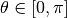

Track¶
A track represents a characteristic line across the geometry.
A track has particular starting and ending points on the boundaries of the geometry and an azimuthal angle.
Public FunctionsTrack()~Track()Destructor clears the track segments container.
void setValues(const double start_x, const double start_y, const double end_x, const double end_y, const double phi)Set the values for the track’s start and end point and angle.
- Parameters
- start_x -
the x-coordinate at the starting point
- start_y -
the y-coordinate at the starting point
- end_x -
the x-coordinate at the ending point
- end_y -
the y-coordinate at the ending point
- phi -
the track’s azimuthal angle ( )
void setUid(int uid)Initializes a track’s unique ID.
This is set by the trackgenerator to correspond to the track’s location in a 2D ragged array of all tracks.
- Parameters
- uid -
the track’s unique ID
void setPhi(const double phi)Set the track’s azimuthal angle.
- Parameters
- phi -
the azimuthal angle
void setAzimAngleIndex(const int index)Set the index for the track’s azimuthal angle index.
The azimuthal angle index corresponds to a an array of all azimuthal angles for owned by the TrackGenerator class.
- Parameters
- index -
the azimuthal angle index
void setReflIn(const bool refl_in)Sets the direction in which the flux leaving this track along its “forward” direction is passed to reflective track for boundary conditions.
Sets whether or not to pass the outgoing flux from this track along its “forward” direction to the “forward” direction (false) or “reverse” direction (true) of the track reflecting out of this one at the boundary. This is used for reflective boundary conditions.
- Parameters
- refl_in -
the “forward” (false) or “reverse (true) direction
void setReflOut(const bool refl_out)Sets the direction in which the flux leaving this track along its “reverse” direction is passed to reflective track for boundary conditions.
Sets whether or not to pass the outgoing flux from this track along its “reverse” direction to the “forward” direction (false) or “reverse” direction (true) of the track reflecting out of this one at the boundary. This is used for reflective boundary conditions.
- Parameters
- refl_out -
“forward” (false) or “reverse (true) direction
void setBCIn(const bool bc_in)Sets the boundary condition for the incoming flux along the track’s “forward” direction.
The boolean represents vacuum (false) or reflective (true) boundary conditions.
- Parameters
- bc_in -
boundary condition for the incoming flux in the “forward” direction
void setBCOut(const bool bc_out)Sets the boundary condition for the incoming flux along the track’s “reverse” direction.
The boolean represents vacuum (false) or reflective (true) boundary conditions.
- Parameters
- bc_out -
boundary condition for the incoming flux in the “reverse” direction
void setTrackIn(Track * track_in)Sets the track reflecting into this track’s “forward” direction.
- Parameters
- track_in -
pointer to the track reflecting into the “forward” direction
void setTrackOut(Track * track_out)Sets the track reflecting into this track’s “reverse” direction.
- Parameters
- track_out -
pointer to the track reflecting into the “reverse” direction
void setTrackInI(int i)Sets the first index of the track reflecting into this track’s “forward” direction in the 2D jagged array of tracks.
- Parameters
- i -
the first index of the incoming track along the “forward” direction
void setTrackInJ(int j)Sets the second index of the track reflecting into this track’s “forward” direction in the 2D jagged array of tracks.
- Parameters
- j -
the second index of the incoming track along the “forward” direction
void setTrackOutI(int i)Sets the first index of the track reflecting into this track’s “reverse” direction in the 2D jagged array of tracks.
- Parameters
- i -
the first index of the incoming track along the “reverse” direction
void setTrackOutJ(int j)Sets the second index of the track reflecting into this track’s “reverse” direction in the 2D jagged array of tracks.
- Parameters
- j -
the second index of the incoming track along the “reverse” direction
int getUid()Return the track’s unique ID.
- Return
- the track’s unique ID
Point * getEnd()Returns a pointer to the track’s end point.
- Return
- a pointer to the track’s end point
Point * getStart()Returns a pointer to the track’s start point.
- Return
- a pointer to the track’s start point
double getPhi()Return the track’s azimuthal angle (with respect to the x-axis).
- Return
- the azimuthal angle
int getAzimAngleIndex()Return the index for the track’s azimuthal angle (with respect to the x-axis).
- Return
- th azimuthal angle index
segment * getSegment(int s segment)Returns a pointer to a segment with a given index.
Returns a pointer to the segment or ends program if track does not have the requested segment.
- Return
- a pointer to the requested segment
- Parameters
- segment -
index into the track’s segments container
segment * getSegments()Returns a vector of pointers to the track’s segments.
- Return
- vector of segment pointers
int getNumSegments()Return the number of segments along this track.
- Return
- the number of segments
Track * getTrackIn()Returns the incoming track.
- Return
- a pointer to the incoming track
Track * getTrackOut()Returns the outgoing track.
- Return
- a pointer to the outgoing track
int getTrackInI()Returns the first index of the track reflecting out of this one along its “forward” direction in the 2D jagged array of all tracks.
- Return
- the first index of the reflecting track
int getTrackInJ()Returns the second index of the track reflecting out of this one along its “forward” direction in the 2D jagged array of all tracks.
- Return
- the second index of the reflecting track
int getTrackOutI()Returns the first index of the track reflecting out of this one along its “reverse” direction in the 2D jagged array of all tracks.
- Return
- the first index of the reflecting track
int getTrackOutJ()Returns the second index of the track reflecting out of this one along its “reverse” direction in the 2D jagged array of all tracks.
- Return
- the second index of the reflecting track
bool isReflIn()Returns whether to give the outgoing flux to the “forward” (false) or “reverse” (true) direction of the track reflecting out of this one along its “forward” direction.
- Return
- “forward” (false) “reverse” (true) direction of outgoing track
bool isReflOut()Returns whether to give the outgoing flux to the “forward” (false) or “reverse” (true) direction of the track reflecting out of this one along its “reverse” direction.
- Return
- “forward” (false) “reverse” (true) direction of outgoing track
bool getBCIn()Returns the boundary condition for the flux along the track’s “forward” direction.
- Return
- vacuum (false) or reflective (true) reflective boundary conditions
bool getBCOut()Returns the boundary condition for the flux along the track’s “reverse” direction.
- Return
- vacuum (false) or reflective (true) reflective boundary conditions
bool contains(Point * point)Checks whether a point is contained along this track.
- Return
- true if the point is on the track, false otherwise
- Parameters
- point -
a pointer to the point of interest
void addSegment(segment * segment)Adds a segment pointer to this track’s list of segments.
This method assumes that segments are added in order of their starting location from the track’s start point.
- Parameters
- segment -
a pointer to the segment
void clearSegments()Deletes each of this track’s segments.
std::string toString()Convert this track’s attributes to a character array.
The character array returned includes the track’s starting and ending coordinates, the azimuthal angle and azimuthal weight.
- Return
- a character array of this track’s attributes